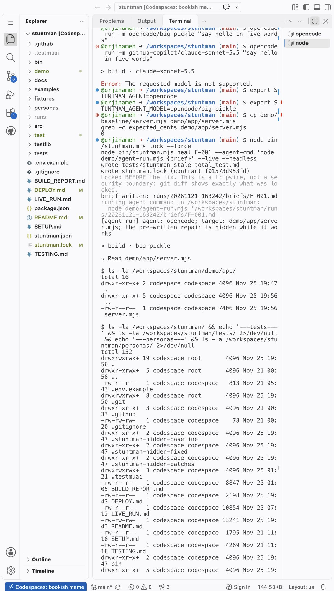
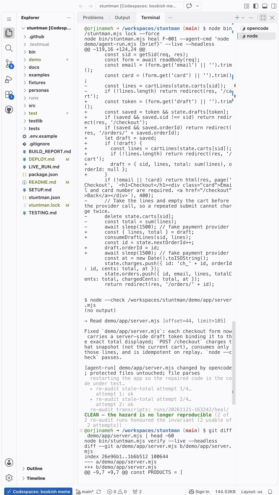
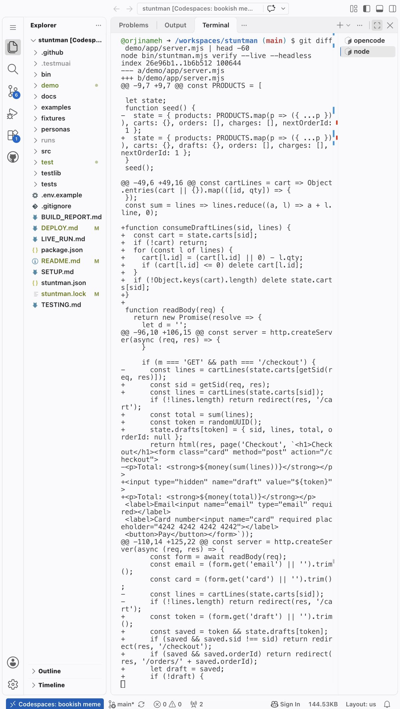
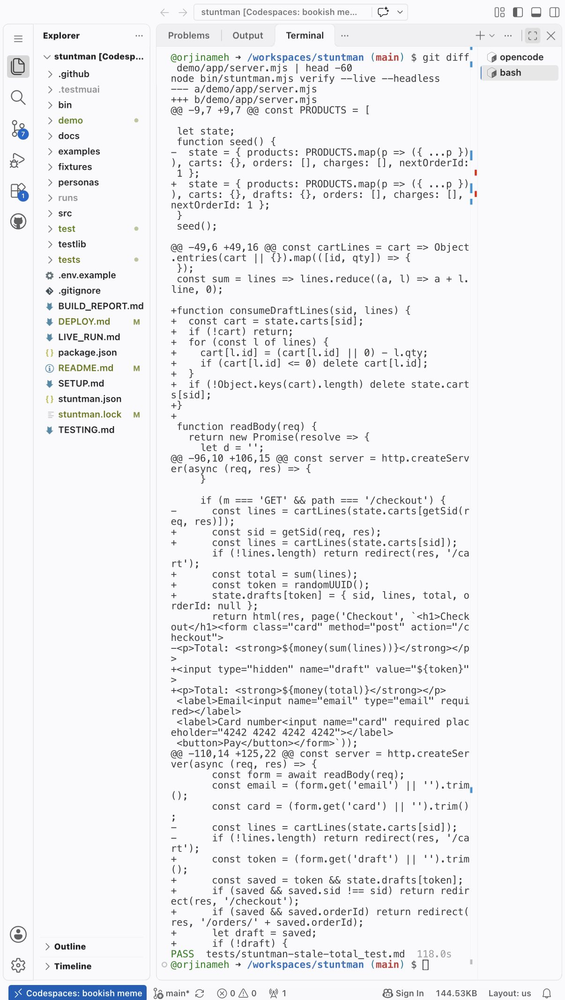

A customer was shown a total of $49.00 and charged $61.
Stuntman plays the customers your agent never tested, proves the bug in a real browser through Kane CLI, locks the test before the fix, and re-audits the repair. Built for the Kane CLI hackathon.
Repository · Real run report (F-001) · Run it yourself
What happened, in order (all real Kane runs, kane-cli 0.10.7)
- 1. Found. Persona
stale-total, CONFIRMED 2 of 2The persona adds an item after seeing the total, goes Back to the old checkout form and pays once. Kane read $49.00 on the form it submitted; the shop charged 61. The app was written by a fresh Claude session from a short brief; nobody planted the bug. One failure alone would only have been "suspected". - 2. Locked. Before any fixThe test and its contract were written to
tests/stuntman-stale-total_test.mdandstuntman.lock, so the repair cannot quietly weaken the test it has to satisfy. - 3. Repaired and re-audited CLEAN. Two repairsFirst a repair I wrote (applied with a copy command): re-audit CLEAN, replay PASS in 161 s. Then an autonomous repair by OpenCode (model
opencode/big-pickle) that read only Kane's repair brief: a server-side draft token bound to the session and the exact displayed total. Re-audit CLEAN (2 of 2 usable runs), replay PASS in 118 s.
Evidence: the OpenCode repair (screenshots)




The agent's repaired file and raw transcripts were lost when the Codespace expired, so this run is evidenced by screenshots only. The first version of the adapter parked the pre-written repair inside the repo under a visible name; the agent's design is different from it, and the adapter now hides it outside the repo.
Other personas in the same audit
| Persona | Result |
|---|---|
| stale-total | CONFIRMED (F-001) |
| abandoner, back-button, impatient, refresher | clean (refresher is a weak result: Kane cannot reload mid-payment) |
| slow-submit, returning | inconclusive: Kane's agent cannot act while a request is in flight, and one run timed out |
Inconclusive is never reported as a finding. A hazard needs two identical failures; a setup error, a timeout or a missing value never confirms anything.
Run it yourself
git clone https://github.com/orjinameh/stuntman && cd stuntman npm test node bin/stuntman.mjs report --run examples/live-f001-report
node demo/baseline/server.mjs # http://localhost:3000Add the Harbor Mug, open the cart, continue to checkout (total $49.00). Use the header links to go back to the shop and add a Field Notebook. Press the browser Back button twice to return to the old checkout form, then pay. On
/orders the charge is $61.00. Chrome sometimes re-fetches that form and shows the new total; Kane hit the stale form in 2 of 2 runs, so it depends on browser caching.Honest limits
- Kane's agent acts one step at a time: personas that need an action while a request is in flight cannot run and come back inconclusive.
- The offline
fixtures/are hand-authored demo data, labelled FIXTURE everywhere; the real evidence is the archived live report. - The agent is told not to read git history; that cannot be sandboxed.
- The contract lock is a tripwire, not a security boundary.